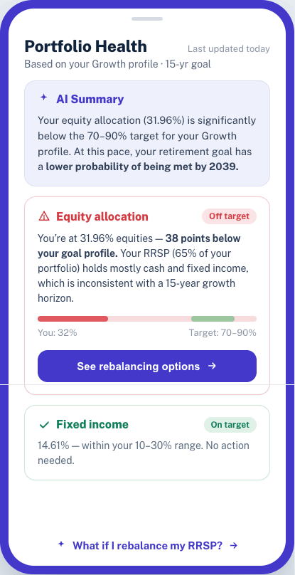
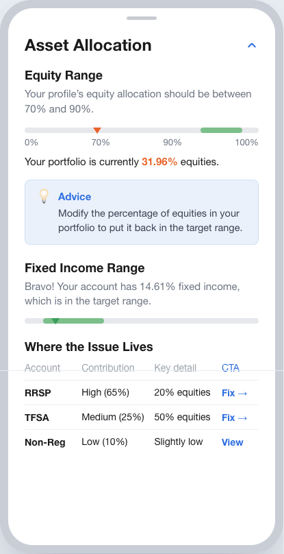
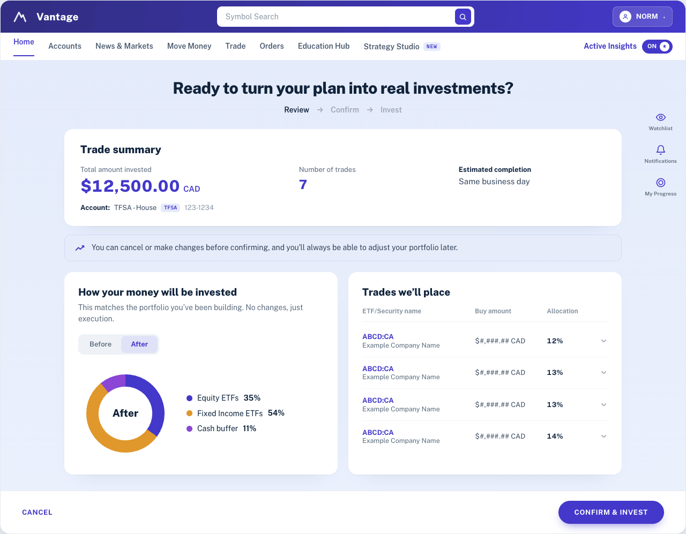
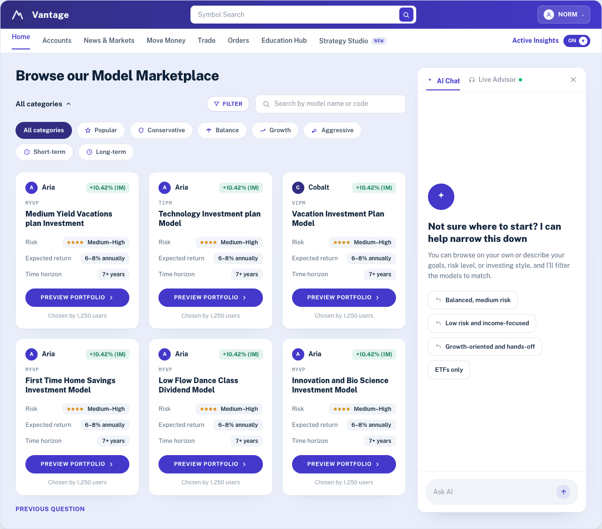
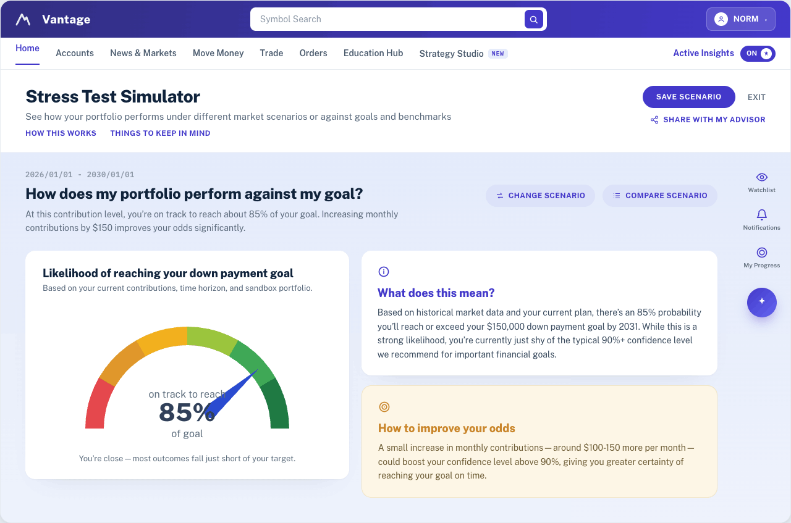

Redesigning Self-Directed Investing
with Guided Decision-Making
BMO InvestorLine gives investors full control — no advisor required. But control without guidance creates friction at the moments that matter most. Over 7 months, I owned Journey 2 (Portfolio Understanding) end-to-end — discovery synthesis, flows, and high-fidelity prototypes — collaborating across all three journeys to keep the experience aligned.
Work was divided by journey: UX Designer → Onboarding (J1) · me → Portfolio Understanding (J2) · Lead Designer → Trade (J3). Key J2 concepts were also applied to the empty state — designed for pre-account users to explore the platform before committing.

The real problem wasn't friction. It was fear.
Discovery ran two tracks: workshops with stakeholders, and existing research the client shared — interviews with 5 advisors who reported what users told them every time they called for help.
Users weren't calling advisors because they wanted advice. They were calling out of fear — afraid to act alone on a platform they didn't understand or trust, afraid of making the wrong financial move. They couldn't find features. They couldn't interpret what they were seeing. When stuck, calling a human was their only option. That's the problem we were actually solving.
The platform had an "advice" section — a panel that monitored preset thresholds and flagged when something crossed the line:
"You have investments with low ratings. Sell investments with a rating of 49 or less."
No context. No connection to who the user was, their goals, or their actual risk capacity. The same alert appeared whether you were a 30-year-old aggressive investor or a 60-year-old retiree. Users saw rules, not reasons.
How might we help users make better financial decisions — without taking control away from them?
Users don't want automation. They want confidence.
The goal wasn't to build an AI. It was to make the platform feel like it was on the user's side. We started by reframing the platform itself — not as a toolset, but as a guidance system — then focused on three things:
BMO InvestorLine is a self-directed (order-execution-only) platform. Under CIRO rules, that model exists because the firm doesn't make recommendations — which keeps it exempt from the suitability obligations a full-service advisor carries. The AI could never tell a user what to do. The real challenge: surface enough context for a confident decision without ever tipping into advice. Every screen had to guide, never instruct.
Stakeholder alignment was the hardest part.
7 months combining research, product definition, and rapid experience design across three journeys.
The existing "advice" functionality wasn't advice — it was threshold monitoring. No awareness of who the user was or what they were trying to achieve. Design foundation for J2: stop monitoring thresholds, start connecting to the person.
Users needed to feel supported, not overridden. Every AI insight had to preserve their sense of control.
Financial data is complex. We simplified explanations without losing meaning.
Guidance needed to appear at moments of uncertainty, not constantly — or it would feel intrusive, not helpful.
Every AI-generated insight had to be transparent and grounded in data. Black-box answers break trust in a financial context.
Two profiles. One shared need.
BMO defined two audiences. I mapped their shared needs and the tensions between them — they drove every design decision.
From anxiety to confidence — by design.
We mapped the emotional arc to find where trust breaks down and where guidance has the most impact.
Not a chatbot. A guidance layer woven into the moments that matter.
Every design decision came back to one question: does this help users understand what's happening and act with confidence?

Turn confusion into clarity.
Users frequently check their portfolio but struggle to interpret what they see. Raw numbers don't answer the question they're actually asking: "Why did my portfolio move?"
We introduced AI-generated explanations that answer it directly — summarizing performance in plain language, highlighting key drivers like market trends and specific holdings, and letting users drill down at their own pace. Instead of raw data, the platform delivers narrative insight — helping users learn while they invest.
We extended this into benchmarking: users compare their portfolio against a BMO model matched to their risk profile, and immediately see what's different and why. The platform then invites, never instructs.
Design decision
The existing advice panel evaluated portfolios against static thresholds — it could tell you your rating was too low, but not what that meant for your goals or risk capacity. The shift: connect portfolio health to who the user is and what they're trying to achieve, not just to preset rules. A narrative before a decision is more valuable than more data.

A dedicated section that flagged when allocations crossed preset thresholds. Same logic for every user regardless of goals, timeline, or risk profile.

Portfolio health connected to who the user is — their goal, timeline, and risk profile. The platform explains what the gap means, not just that it exists.
Always available, never intrusive
In early concepts we designed a dedicated AI hub — a separate screen for guidance. In usability testing, users ignored it. They weren't looking for a separate destination; they expected help to appear exactly where they were making a decision.
So we moved guidance inline. AI became part of the experience itself — explaining decisions in plain language, answering questions in context, surfacing what's most relevant. The reasoning behind every insight is visible, not hidden.
Design decision
In early concepts we explored a dedicated AI hub — a separate screen for guidance. Users ignored it. The insight: guidance needs to live where decisions happen. Moving everything inline, to the exact moment of decision, is what made it feel useful.

Help users act with confidence
Executing a trade is the highest-stakes moment — and the moment most platforms abandon the user. The standard flow: ticker, quantity, price. What it doesn't tell you: what this does to your risk, diversification, goals.
We designed one step earlier. Before the user commits, the platform surfaces what matters. They can ask — "How will this affect my balance?" — and get a contextual answer tied to their specific situation.

Build confidence through action, not instruction
New investors weren't afraid of the platform — they were afraid of themselves. Afraid of making a move that couldn't be undone. The usual response: more education. We tried a different approach.
The sandbox lets users try a trade, see the exact impact, and decide whether to execute for real. Nothing commits until they say so. Confidence comes from doing, not reading.

Shift users from reactive to proactive thinking
Most investment decisions happen reactively — the market moves, the user panics, they act. The What If? tool breaks that pattern by making consequences visible before a decision becomes urgent.
The AI's role isn't to choose. It's to make the user's choices legible. Autonomy only feels real when you can see the road ahead.

From vision to a phased build.
Rather than launching everything at once, we defined a progressive rollout — clarity first, then decision support, then personalization.
Three journeys designed. One shipped, all applied.
The engagement ended with a pivot: Journey 1 (Onboarding) was selected by the client for development and delivered for implementation. Journeys 2 and 3 weren't shelved — their concepts were applied to the empty state experience, the design for users who haven't yet opened an account.
end-to-end
for implementation
end-to-end
across product + eng
A design for users who haven't yet opened an account — to let them explore the platform before committing. Journey 2 and Journey 3 concepts (portfolio understanding, pre-trade intelligence, scenario exploration) were applied here, giving the experience depth even before a real portfolio exists.
What I took away.
Designing for financial decisions isn't just about usability — it's about responsibility.
The goal isn't to make decisions for users, but to help them make better ones.